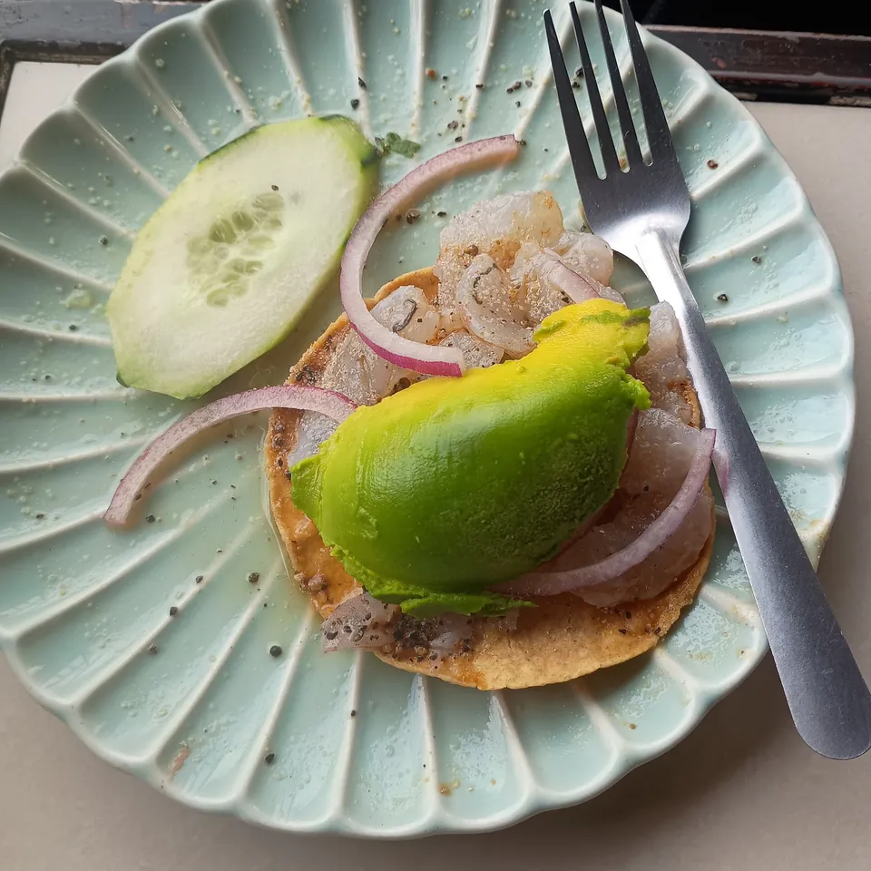
Tostada de ceviche
Pregunta el precio
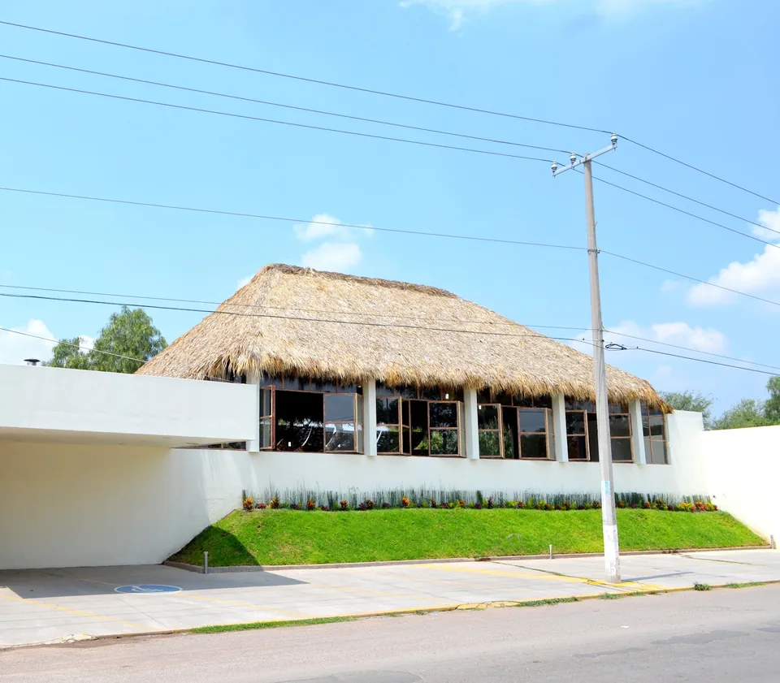
Jesús María, Ags.
La carta, por tiempos
Escoge por tiempos. Te dejamos el recado listo para dictarlo por teléfono.
Llega solo: caldo de camarón de bienvenida.

Pregunta el precio
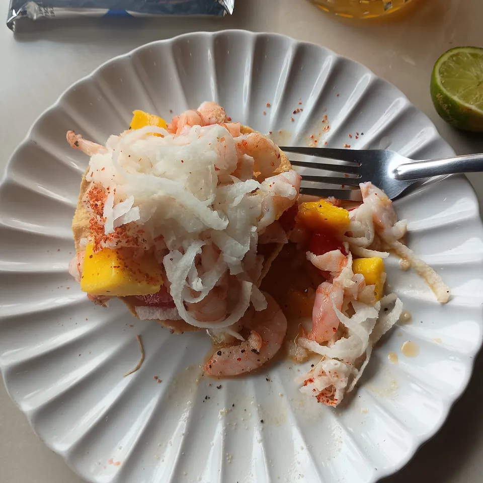
Pregunta el precio
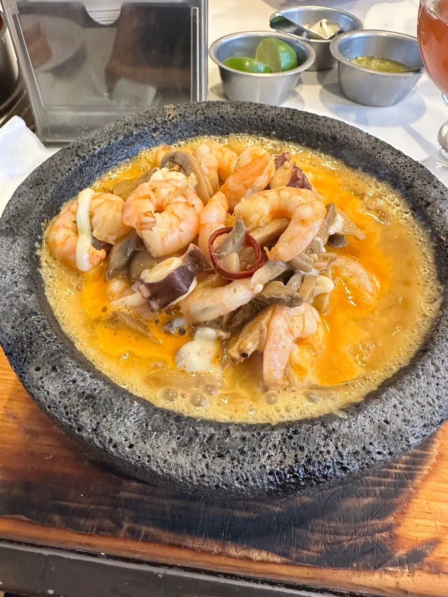
Pregunta el precio
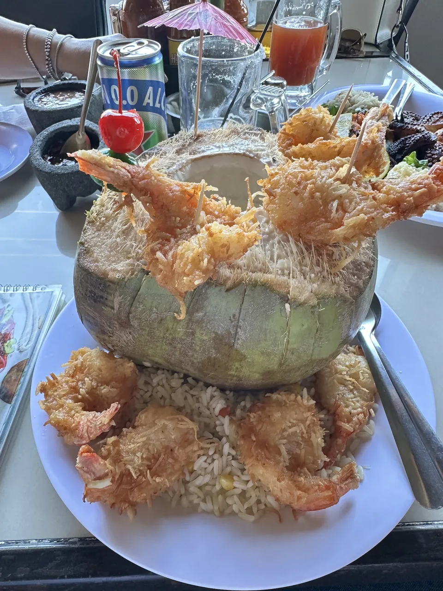
Pregunta el precio
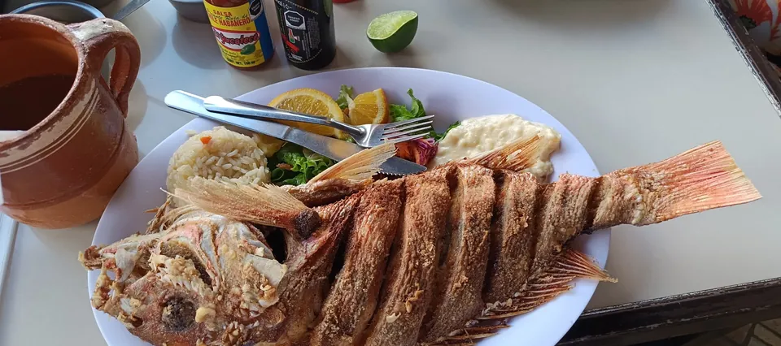
Pregunta el precio
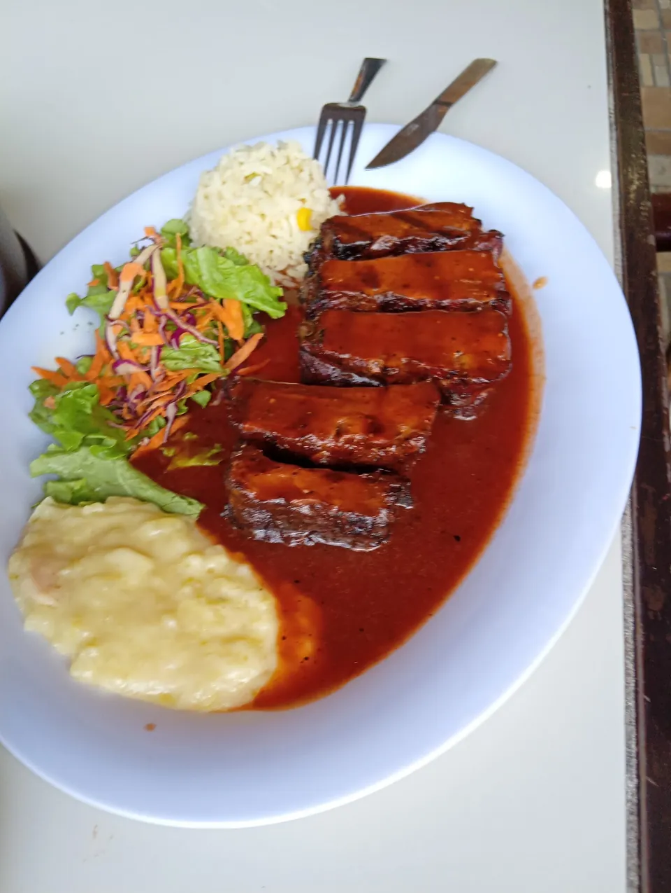
Pregunta el precio
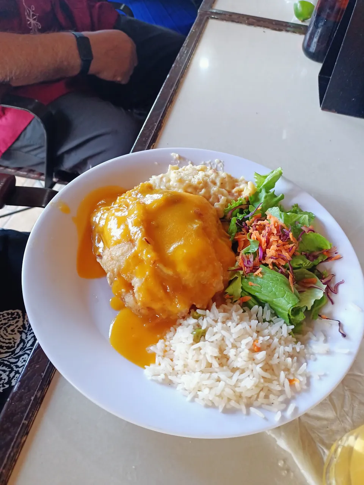
Pregunta el precio
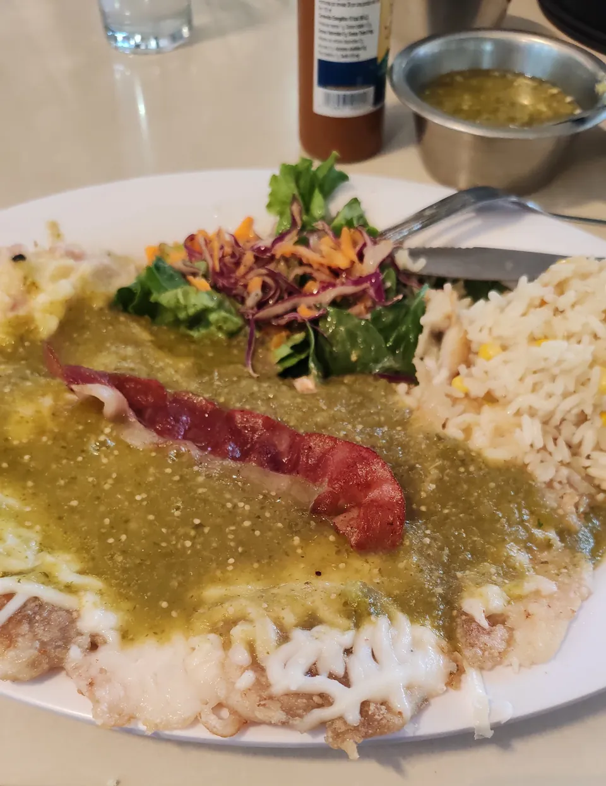
Pregunta el precio
El lugar
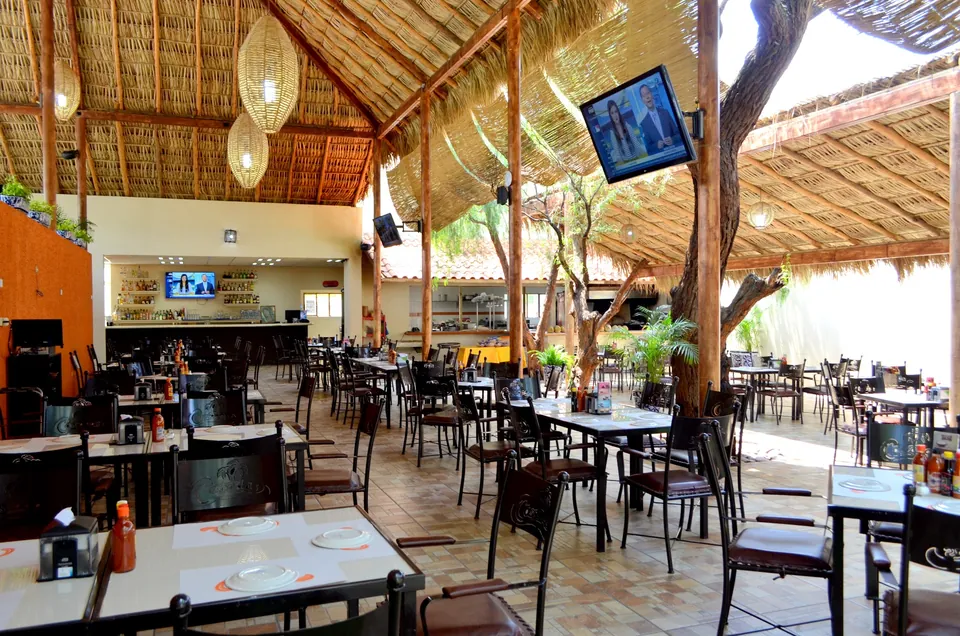
Lo que sale de la cocina
Pregunta el precio de cada uno. Calcula de 200 a 300 pesos por persona.
Galería
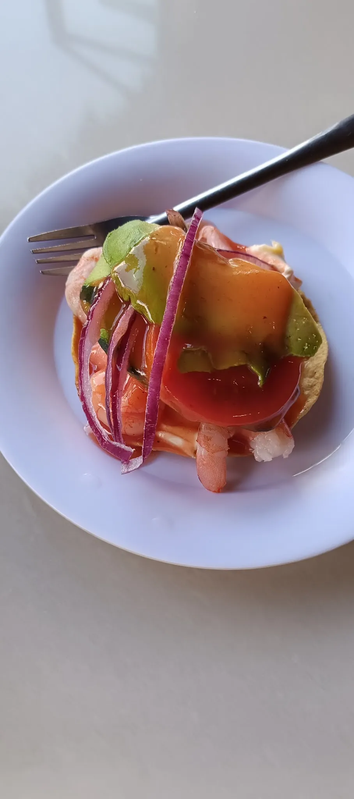
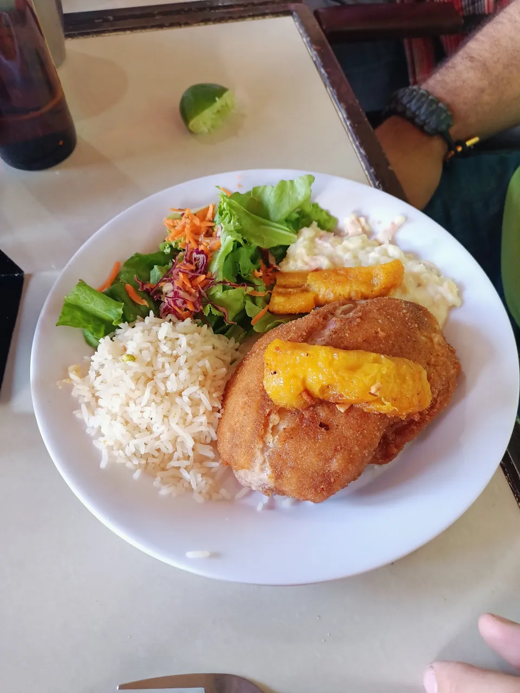
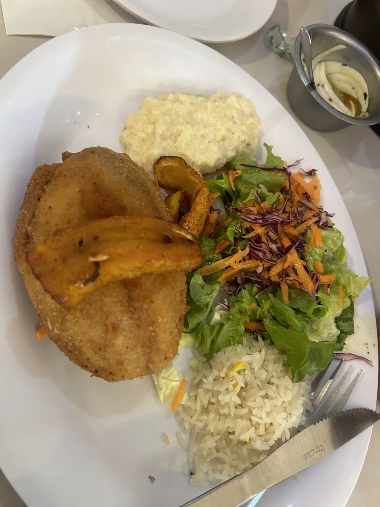
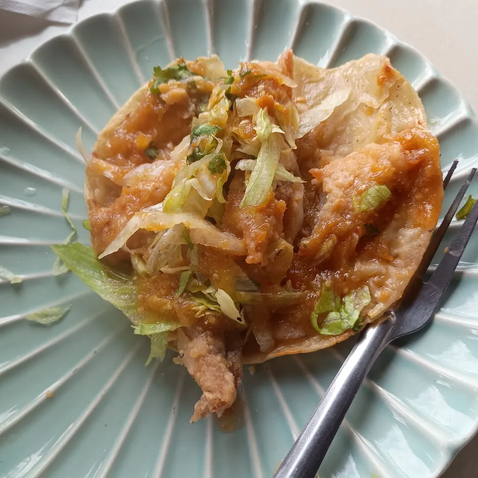
Lo que dicen en Google
4,5
2,538 opiniones en Google Maps
Todo muy bien, buenos precios, buen lugar, todo accesible y la comida con buenas porciones y buen sabor.
aldo gaytan
El lugar es excelente para ir a comer en pareja o familiar, tiene un excelente trató al cliente, te dan una muy buen trato y el único detalle que si es necesario hacer reservación para asegurar lugar…
Rica Torres
Te reciben con un caldo de camarón con gran sabor. El servicio fue bueno, y estuvieron muy atentos a todo lo que pedimos. Tienen una gran variedad de platillos, así como de cervezas y distintas entradas.
Miguel Hernandez
A fairly nice and clean place with great food. The volcan de mariscos in particular. There is a playground for kids in the restaurant.
Ime Prezime
Excellent service, a reasonable pricing, and high quality and taste on every dish. But most importantly a private medium parking garage is available.
Alex Garcia
Better than average seafood and better than average ambiance. They have really good stuffed fish.
Miguel Portals
Visítanos
Dirección
Restaurante Cascadas
Jesús María, Ags.
Abierto todos los días de 12:00 a 19:30
Horario
Para que quede tuya
Pásanoslo por el mismo chat donde te llegó esta muestra.
Volver arriba